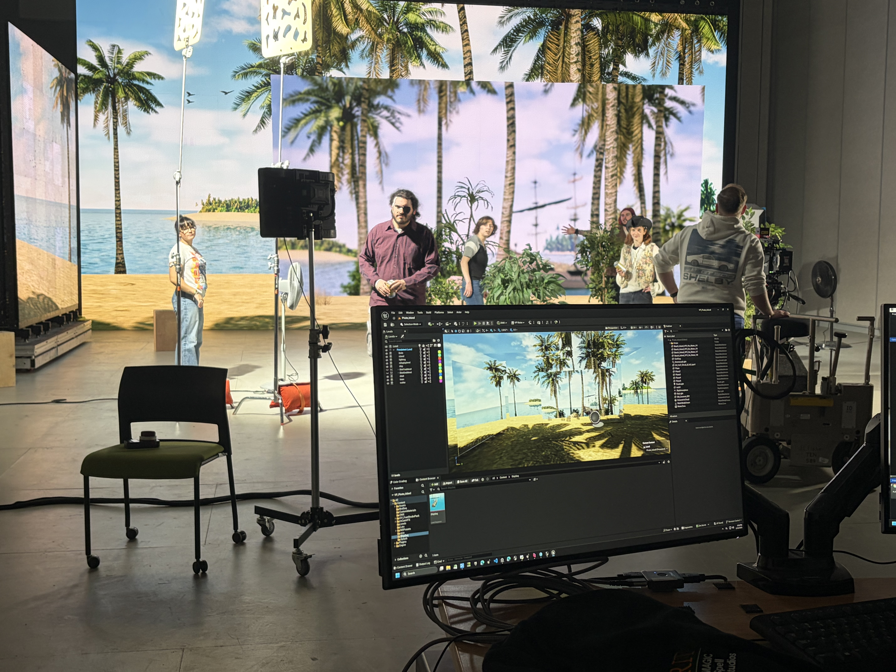

In semester 2 of virtual production, the class is producing a series of beer commercials. The idea behind this project is to experiment with different tools and workflows, to learn as much as we can and play with visual effects.
Commercial 1 focused on using the LED wall for in-camera visual effects. We created a full 3D beach environment in Unreal, and filmed the commercial on the stage, syncing the physical camera with the virtual environment using marker-based camera tracking. I worked in the virtual art department team to help build the environment, and also made my debut as a pirate. Some BTS below :)

Commercial 2 is a little more ambitious. We wanted to play with motion capture and take advantage of the Vicon system we have at RIT. The entire commercial is being created in Blender, with motion capture data to drive the character animation. While the class has previously worked with creating 3D environments, none of us have a background in 3D animation. Motion capture allows us to record some human movement and retarget it to digital characters to get a baseline for our animation, which is a great opportunity to learn about how mo-cap integrates into animation pipelines.
My current role is preparing our hero asset, an animated beer can character. The base can model was created by another team member (thanks chase!!), but I adapted the asset so it could function as our hero character, to be copy and pasted into the scene. This involved:
Below is a quick test animation showing the can doing a little dance using retargeted motion capture data! :)